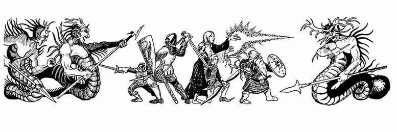

最低层的洞穴与天然洞窟 · Caves and Caverns for Lowest Levels
你可以在地下城底层采用粗凿而成的天然隧道；若掷出房间或大厅，则改用下表生成洞穴与洞窟。出口规则不变。
表 VIII：洞穴与洞窟（d20）Table VIII: Caves and Caverns (d20)
| 骰值 | 结果 |
|---|---|
| 1–5 | 洞穴，约 40' × 60' |
| 6–7 | 洞穴，约 50' × 75' |
| 8–9 | 双洞穴：20' × 30' 与 60' × 60' |
| 10–11 | 双洞穴：35' × 50' 与 80' × 90'* |
| 12–14 | 洞窟，约 95' × 125'* |
| 15–16 | 洞窟，约 120' × 150' |
| 17–18 | 洞窟，约 150' × 200'* |
| 19–20 | 巨型洞窟，约 250'–300' × 350'–400' ** |
\* 掷骰决定其中是否有水池（见表 VIII.A）。
\** 掷骰决定其中是否有湖泊（见表 VIII.B）。
表 VIII.A：水池（d20）Table VIII.A: Pools (d20)
| 骰值 | 结果 |
|---|---|
| 1–8 | 无水池 |
| 9–10 | 有水池，无怪物 |
| 11–12 | 有水池，有怪物 |
| 13–18 | 有水池，有怪物与财宝 |
| 19–20 | 魔法水池* |
见表 VIII.C。
表 VIII.B：湖泊（d20）Table VIII.B: Lakes (d20)
| 骰值 | 结果 |
|---|---|
| 1–10 | 无湖泊 |
| 11–15 | 有湖泊，无怪物 |
| 16–18 | 有湖泊，有怪物* |
| 19–20 | 魔法湖泊** |
\* 从相应的遭遇矩阵决定怪物与财宝。
\ 成功渡过魔法湖泊的人会抵达另一位面、特殊神殿等地（若没有特殊地图，则按有怪物的普通湖泊处理）；有 90%** 概率有怪物守卫湖泊。
表 VIII.C：魔法水池*（d20）Table VIII.C: Magic Pools (d20)
| 骰值 | 结果 |
|---|---|
| 1–8 | 一次性将黄金变为铂金（掷 1–11）或铅（掷 12–20）。 |
| 9–15 | 一次性改变池中所有角色的一项属性：掷骰决定属性，再掷 1–3增加、4–6减少；每名角色分别掷骰决定增减、属性与幅度（1–3 点）。 |
| 16–17 | 会说话的水池：阵营相同的角色可获得 1 个祈愿，其他角色受到 1–20 点伤害。祈愿可保留至多 1 天。水池阵营：守序善良 1–6，守序邪恶 7–9，混乱善良 10–12，混乱邪恶 13–17，中立 18–20。 |
| 18–20 | 传送水池：1–7返回地表；8–12传至本层其他地点；13–16传至下方 1 层；17–20传至 100 英里外（用于荒野冒险）。 |
| 属性骰值 | 属性 | 属性骰值 | 属性 |
|---|---|---|---|
| 1 | 力量 | 4 | 敏捷 |
| 2 | 智力 | 5 | 体质 |
| 3 | 感知 | 6 | 魅力 |
\* 角色必须进入魔法水池，才能查明它的性质。

上一节：随机地下城起始区域 · Start Areas for Random Dungeon
下一节：单人游戏中的随机地下城生成 · Random Dungeon Generation for Solo Play